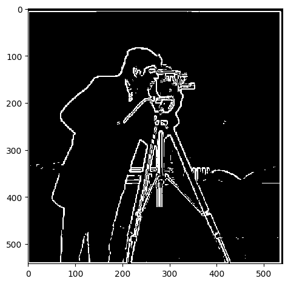
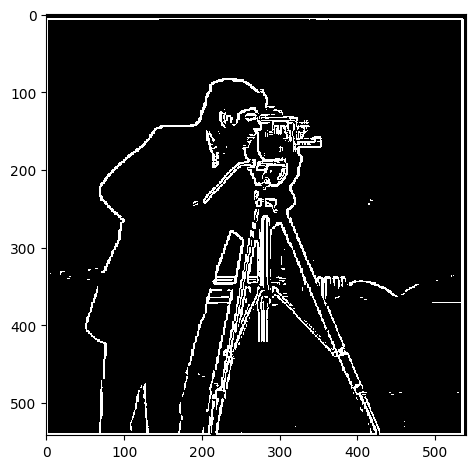

Gallery
FD and DoG Filters
The central idea behind this part is that derivatives and gradients can be used as "edge detectors" in images because edges occur where colors change rapidly. Take this image:

Since images are multidimensional, we can take partial derivatives/differences in each direction by doing a convolution, which yields the following: (left is $x$ direction, right is $y$ direction)
Looking closely, we can see that for the $x$-direction filter, darker portions are left edges, and lighter portions are right edges.
We instead look at the gradient which is more representative of rapid changes in any direction. This way, we can obtain edges in general. We compute the gradient at a pixel $p_{x,y}$ to be:
$\sqrt{D_x p_{x,y}^2 + D_y p_{x,y}^2}$
where $D_x p_{x,y} = p_{x,y} - p_{x+1, y}$ and $D_y p_{x,y} = p_{x,y} - p_{x,y+1}$. Computationally, $D_x p$ and $D_y p$ are found by convolving $p$ (the image) with
[[1,-1]] (we henceforth denote $D_x$ via notation abuse) and
[[1], [-1]] (we henceforth denote $D_y$ via notation abuse). In other words,
$(D_x * p)_{x,y} = p_{x,y} - p_{x-1, y}$
$(D_y * p)_{x,y} = p_{x,y} - p_{x,y-1}$
And then threshold to get rid of noise, we get the following binarized image:
which isn't too bad! We've detected the edges. But there is much room for improvement, since there is still much noise, and the edges don't look to be continuous.
To deal with this, we first blur our images. Applying a Gaussian blur "smudges" the images, so random sharp gradients will get damped much more, whereas sharp gradients which occur near others (forming an "edge") will be damped less. We first create a Gaussian filter $G$, and compute the blurred image $G * p$. Then convolving $D_x$ and $D_y$ with $G * p$ and computing the gradients as done before, we obtain:
This looks great! The edges are much more clear, and there's much less noise.
Now something to notice is that $D_x * (G * p) = (D_x * G) * p$ by associativity of the convolution operation (with some potential kinks, but we'll ignore this here), so it makes sense to compute $D_x * G$ and $D_y * G$ first, and then apply these directly to $p$. This yields:
which again, looks pretty cool.
Image Sharpening
I was able to apply a Gaussian blur to the original Taj Mahal to obtain the image on the right, after which I subtracted and normalized as
(image - alpha * blurred) / (1-alpha). This got the following results with
alpha = 0.5:
By the properties of convolution and denoting $I$ to be the kernel such that $I * p = p$ for any image $p$,
$$(p - \alpha G * p)/(1-\alpha) = \left(\frac{1}{1-\alpha}\left(I - \alpha G\right)\right) * p$$
and $(\frac{1}{1-\alpha}(I - \alpha G))$ becomes our "sharpening kernel". Applying this to other images, we obtain the following:

We can see the difference between these two images by subtracting them (and magnifying the difference to be more visible):
Notice how this seems to capture the edges of the image!
And looking at the difference:
we can better see which parts of the image were impacted. Now consider a sharp image:


And looking at the difference:
we can better see which parts of the image were impacted.
Hybrid Images
Log
3.1. Image Sharpening
I gaussian blurred the Taj Mahal image with a kernel size of 7 and then subtracted from the original factor with a weight of alpha being 0.3 and 0.5. I got the following images:
We can clearly see improvement from the initial Taj Mahal image:
I also got this funky version of the image when using an excessively high alpha, probably due to clipping and noise:
2.2. Derivative of Gaussian Filter
I've heard that it's best to use kernel sizes of 3 or 5 or some other small number, so I chose to use a kernel size of 5. The blurred image looks like:
 After doing the same procedure as before on this blurred image, I got the following clearer outline:
I can then make these "DoG" filters by convolving the gaussian kernel with the finite difference kernels. The fundamental idea behind doing this is that convolution is an associative operation, so we can just merge the differencing and convolution operations.
After doing the same procedure as before on this blurred image, I got the following clearer outline:
I can then make these "DoG" filters by convolving the gaussian kernel with the finite difference kernels. The fundamental idea behind doing this is that convolution is an associative operation, so we can just merge the differencing and convolution operations.
 Applying these combined filters yields the same result (albeit with a slightly different threshold... for some reason).

Applying these combined filters yields the same result (albeit with a slightly different threshold... for some reason).

2.1. Finite Difference Operator
Finished the finite difference operator section. First, I applied convolutions to take the partial derivatives in the $x$ and $y$ directions, which got me:
from which we can see that the change in pixel value is a good indicator of whether there is an edge there. So we take the gradient magnitude:
and finally threshold to remove some noise manually:
1. Started Project
You can use these dropdown arrows to check out what happened at each step!